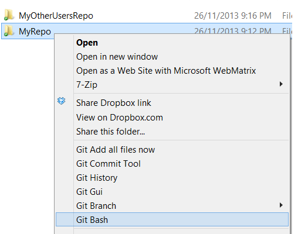
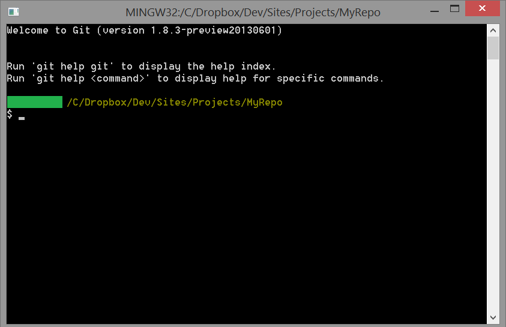
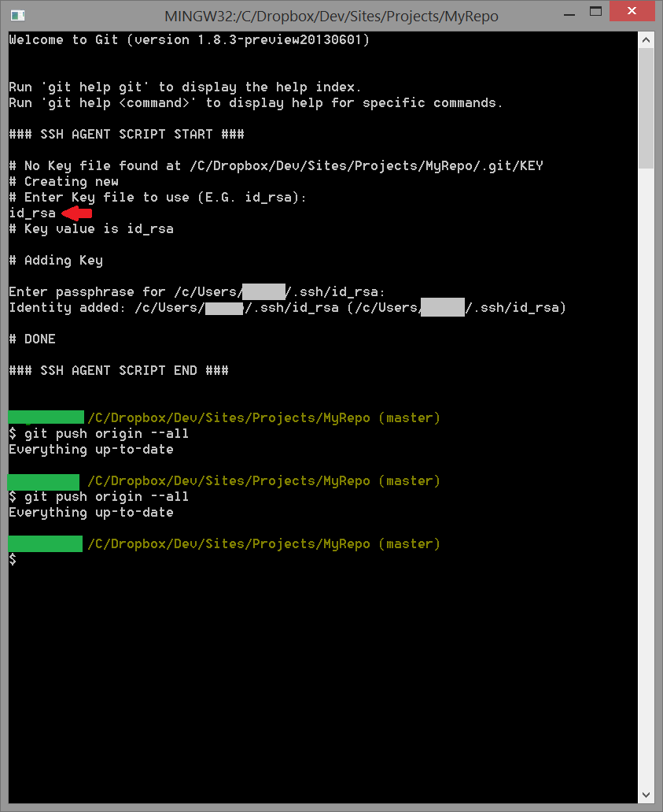
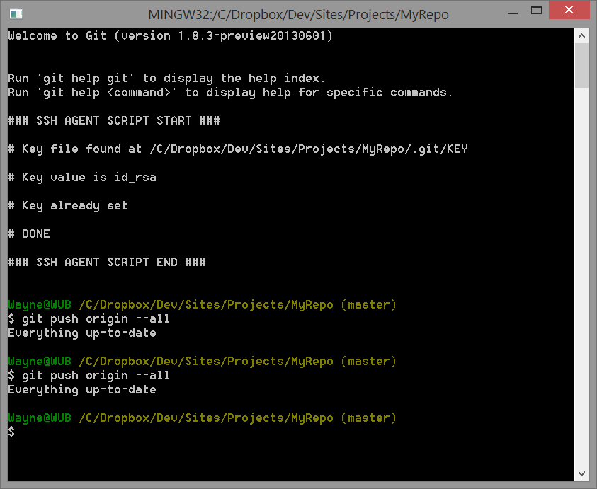
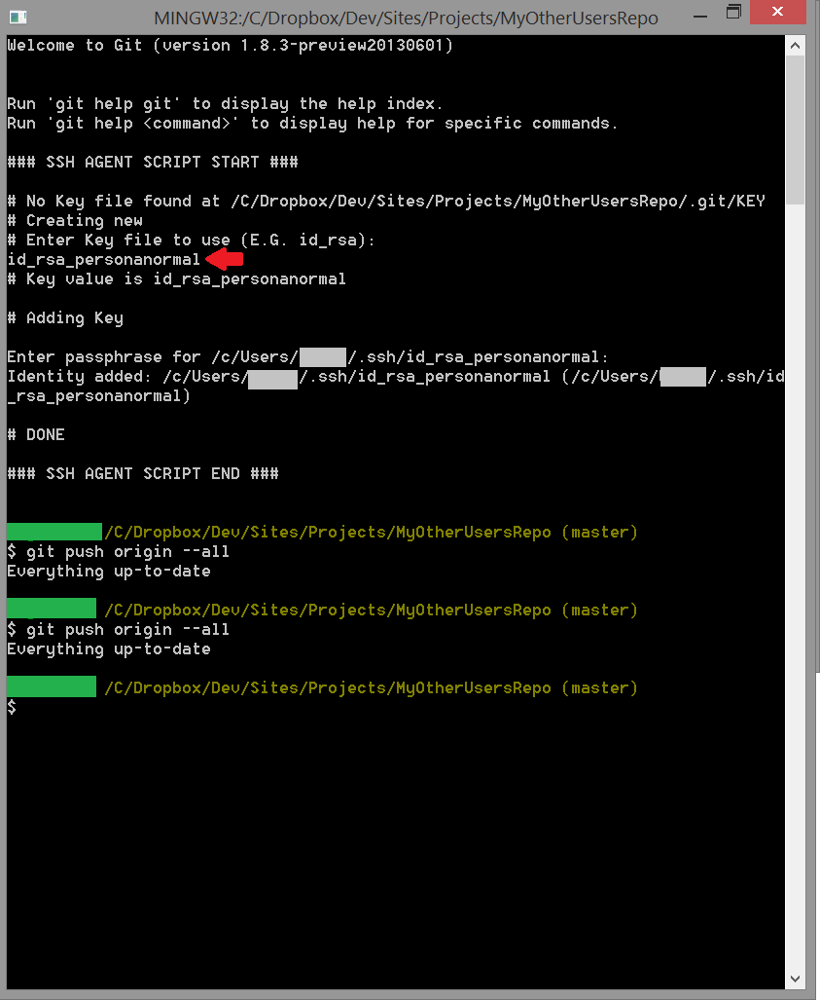
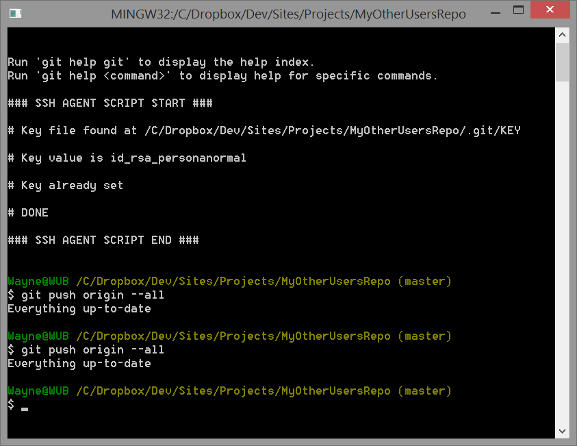

Nothing is ever simple; Multiple GitHub accounts on Windows
Introduction
Being primarily a .NET developer I've come to rely on the
Visual Studio Tools for Git extension
for most of my Git needs. More recently however I've started work on some other projects for which
the command line is much better suited. Enter Git for Windows.
I've used this before and it works well enough for the standard use case:
One GitHub account
All our repos on this machine use this account
HTTPS connection
Credential Helper for password caching
As the title of this post suggests I want to be able to use multiple
GitHub accounts. Also as the title suggests, this isn't simple.
How it should work
After you install Git for Windows you get all of those handy Git shortcuts in your context menu whenever you click on a folder.

Unsurprisingly clicking on Git Bash opens a Git Bash terminal window at your current location
and you're free to start Git'ing.

As far as authentication goes my expectation would be that I'd probably have to enter my details
once per session. E.G. When I do my first push after opening the terminal window. After that they
should be remembered for the life of the terminal window.
How it works in practice
GitHub recommends you use HTTPS. What happens when you do a push when using HTTPS?
You'll get prompted to enter a user name and password everything time you
do a push (unless you've already modified your setup). No Thanks.
GitHub for Windows is a GUI tool provided by GitHub. This isn't really a solution because
a) It's not command line based and b) It doesn't work particularly well when you have want to
work with multiple accounts. From memory you have to continually switch accounts.
The Credential Helper is something you install and after that it remembers your credentials
for you so you don't have to type them in every time. That sounds pretty good but it doesn't
(as far as I could tell) work if you need to support multiple accounts on one machine. Bummer
So HTTPS appears to be a dead-end and after my best attempts to Google a solution I found nothing
that suggests otherwise. What about SSH?
SSH is the solution to our problem. It does suffer from the same password caching problem
that HTTPS does (you have to enter your passphrase every time) however this is can fixed.
Multiple accounts aren't supported "out of the box" but again this is something that can be fixed.
Setting up SSH for Multiple Accounts
If you're in the situation where your repositories are all set up to use HTTPS, changing them to use
SSH is pretty straight forward:
Generate an SSH key
Set the SSH key on GitHub
Change your repo's remote to use SSH
GitHub provides the instructions for steps 1 and 2
here.
For step 3 the command you need to use is:
These instructions can be followed verbatim for your main GitHub account (it doesn't
really matter which GitHub account you use here, but for the any subsequent accounts that we set
up the process is a bit different).
After setting up the repo to use SSH you can do a push and you should be prompted for a passphrase.
If you don't get prompted for a passphrase (you get some other error) chances are something has gone
wrong in which case you'll need to do some
troubleshooting.
As mentioned above you'll get prompted for the passphrase every time you try and do a push. We'll get to that shortly.
Firstly we need to set up SSH for a repo belonging to another account.
Setting up our SSH for our other account is a bit different. When you follow the previous instruction you end up with an id_rsa key in your .ssh folder (usually C:\Users\Name\.ssh). This means we need to generate a key with a different name, which is easy enough. We then need to provide a way for Git to be able to work out which key is the correct one to use. I could go into more detail on this but fortunately someone else has written a tutorial about how you set all this up. Unfortunately this wasn't written with Windows in mind so in step 2 when we are instructed to run the following command:
ssh-add ~/.ssh/id_rsa_MyOtherUserName
We'll get an error. This is ok, we can deal with that later. I really recommend reading the tutorial but in summary, here's what you need to do:
Generate an SSH key with a different filename E.G. id_rsa_MyOtherUserName
Set the SSH key for your other GitHub account on GitHub.com
Create a config file in your .ssh directory which contains the following:
#Default GitHub
Host github.com
HostName github.com
User git
IdentityFile ~/.ssh/id_rsa
#My other GitHub account
Host github-MyOtherUserName
HostName github.com
User git
IdentityFile ~/.ssh/id_rsa_MyOtherUserName
We should now be at the stage where we can push to either of our repos via SSH. However we still need to enter the passphrase each time.
Remembering the passphrase
GitHub provides a guide on how to to use ssh-agent to remember the passphrase. It also provides a script which you need to use to achieve this. The problem with the script is that it doesn't handle multiple accounts, however it's a good starting point for our modified script:
#! /bin/bash
ECHO ""
ECHO "--- SSH AGENT SCRIPT START ---"
ECHO ""
# Note: ~/.ssh/environment should not be used, as it
# already has a different purpose in SSH.
env=~/.ssh/agent.env
# Note: Don't bother checking SSH_AGENT_PID. It's not used
# by SSH itself, and it might even be incorrect
# for example, when using agent-forwarding over SSH).
add_key_from_keyfile(){
KEYFILE="/.git/KEY"
KEYPATH=$PWD$KEYFILE
if [ -f $KEYPATH ]
then
ECHO "@ Key file found at $KEYPATH"
ECHO ""
KEYVAL=`cat $KEYPATH`
add_key $KEYVAL
else
ECHO "No Key file found at $KEYPATH. Creating new"
ECHO "Enter Key"
READ KEYIN
if [ -z $KEYIN ]
then
ECHO "@ No Key value read"
ECHO ""
ECHO "@ DONE"
else
ECHO $KEYIN > $KEYPATH
add_key $KEYIN
fi
fi
}
add_key(){
if [ -z $1 ]
then
ECHO "@ No Key value read"
ECHO ""
ECHO "@ DONE"
else
ECHO "@ Key value is $1"
ECHO ""
ECHO "@ Adding Key"
ECHO ""
ssh-add ~/.ssh/$1
ECHO ""
ECHO "@ DONE"
fi
}
agent_is_running() {
if [ "$SSH_AUTH_SOCK" ]; then
# ssh-add returns:
# 0 = agent running, has keys
# 1 = agent running, no keys
# 2 = agent not running
ssh-add -l >/dev/null 2>&1 || [ $? -eq 1 ]
else
false
fi
}
agent_has_keys() {
ssh-add -l >/dev/null 2>&1
}
agent_load_env() {
. "$env" >/dev/null
}
agent_start() {
(umask 077; ssh-agent >"$env")
. "$env" >/dev/null
}
if ! agent_is_running; then
agent_load_env
fi
if ! agent_is_running; then
agent_start
add_key_from_keyfile
elif ! agent_has_keys; then
add_key_from_keyfile
fi
unset env
ECHO ""
ECHO "--- SSH AGENT SCRIPT END ---"
ECHO ""
The original script relies on the default key name (id_rsa). The modified script looks for a KEY file in the .git folder of the curent repository. This file contains the name of the ssh key file which the repo should use. E.G id_rsa_MyOtherUserName. If the KEY file doesn't exist it will prompt you to create it. After this you'll be prompted for the passphrase and it will last for the session.
The script needs to go in your .bashrc file which exists under the bash home directory which is usually your user directory. E.G.
C:\Users\Name\.bashrc
If you need to double check the directory just enter "~" into the bash terminal.
So What?
What is our workflow now?
Main User Repo - First Run:

Main User Repo - Subsequent Runs:

Perfect! No Need to enter any values. The only time we have to specify the key file to use is the first time we open the terminal for a repo. The only time we have to enter the passphase is the first time we run we open the terminal for a "session". Technically a session is the lifetime of ssh-agent process. This process gets started by our script if it's not already running and remains open until forcibly closed.
What about for our other user?
Other User Repo - First Run:

Other User Repo - Subsequent Runs:

Same as above. Perfect. We finally have a good multiple user Git setup for Windows.